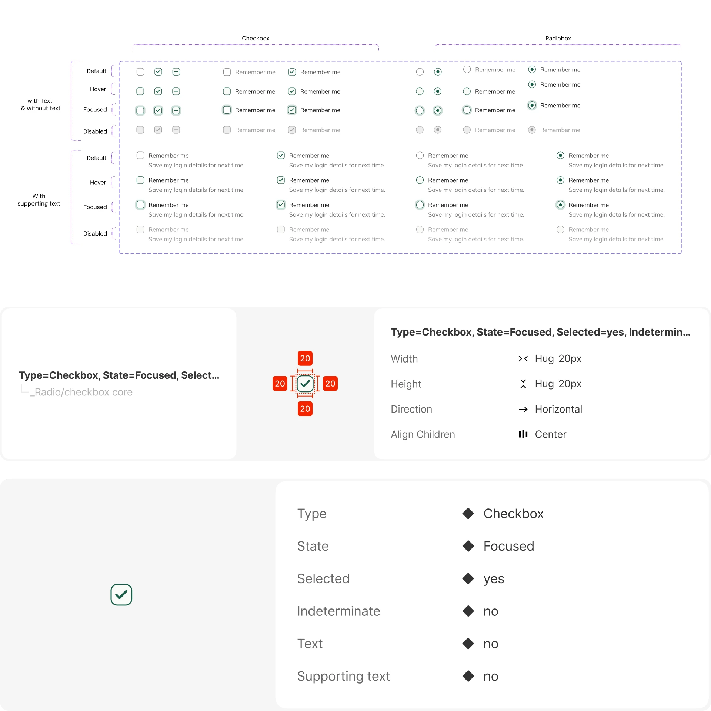
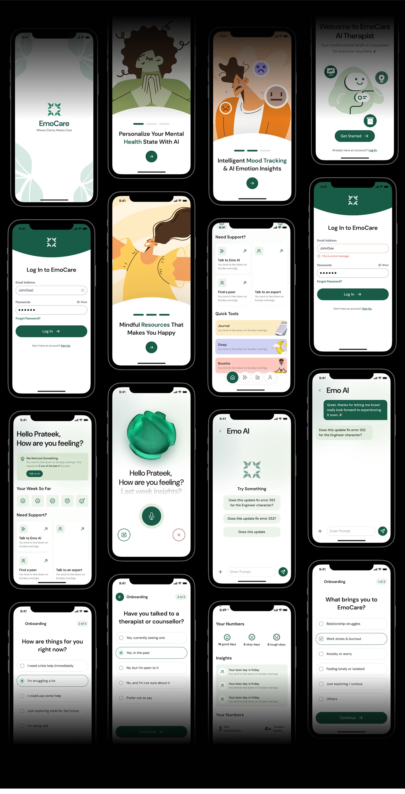

A design system for an emotional-support app.
EmoCare is a personal exploration — not a shipped product. I picked the emotional-support category because the available apps tend to feel either cold or cartoonish, and I wanted to see what a system anchored in trust + warmth + accessibility would actually look like at the token level.

A personal exploration, not a brief.
EmoCare is a self-initiated project. There was no client, no roadmap, and no team waiting on it. I'd been thinking about how mental-health apps tend to fall into one of two visual traps — clinical and cold, or cartoonish and shallow — and wanted to see what a tokenised system anchored in calm, trustworthy UX would actually look like at the foundation level.
The imagined product is a mobile app for young adults navigating the early signs of stress, anxiety and burnout — the kinds of feelings that don't always need a therapist, but always benefit from somewhere quiet to land. The goal of the system isn't to look beautiful in a file. It's to disappear inside that hypothetical product, and let the product feel like care.
Two audiences, one system.
A design system always has two readers. I designed for both:
- The person opening the app — a young adult in a moment of stress. They don't want clinical jargon or cartoon mascots. They want a calm surface that lets them think. Every token decision had to support that mood.
- The hypothetical product team — designers and engineers who'd one day build on this system. They'd need tokens, ready components, and clear documentation so they could focus on flows, not re-debating padding.
Mental-health apps pick the wrong side.
I started with a competitive sweep of the most-used apps in this space. The pattern was hard to miss — most products land in one of two failure modes:
- Clinical-leaning — therapy-marketplace and self-report tools. Professional tone, but can feel unwelcoming to someone already in distress.
- Playful-leaning — avatar-driven chat experiences. Friendly, but the cartoonish frame is hard to trust when the topic is heavy.
- Atmospheric but inflexible — meditation and mood apps. Strong illustrative warmth, but limited personalisation and little underlying systematic structure for product teams to extend.
No one was hitting all three at once: a scalable system, a visual language balancing trust + warmth, and accessibility baked into the foundation rather than retrofitted on top.


Tokens before screens. Foundations before features.
Most teams build screens then retrofit a system. I wanted to do the opposite — build the system first, then prove it by dropping it onto screens at the very end. The whole project was a two-week stress test of that idea.
Trustworthy without being clinical. Warm without being childish. Accessible without friction.
That single sentence stayed pinned to the cover frame of the system. Three principles came out of it:
- Soft, but never sweet. Generous corner radii and spacing so the interface breathes — but kept restrained so it doesn't tip into childish.
- Tokens as the source of truth. Every colour, spacing value, type style is a token — never a hard-coded value. Theming, dark-mode and accessibility scale from that.
- Accessible by default. WCAG-aligned colour contrast on the foundational palette, scalable type, focus states baked into every interactive component.

Foundations, then components.
The system is structured in two layers: foundations (the unopinionated primitives — type, colour, spacing, radius, shadow, icons) and components (the opinionated compositions built from them). The split is intentional — it lets future themes change foundations without touching every component.
Typography
A consistent set of text styles, each mapped to a token, with guidance on hierarchy, usage and readability. One scale — Display, H1–H4, Body, Caption — enforced across every screen so headings always lead and bodies always feel readable.

Spacing
An 8-px base scale (with 4-px micro adjustments where needed) for layout and component composition. Same rhythm across every surface — it's the quiet thing that makes the product feel coherent.

Border radius
Corner treatments standardised across UI elements. Slightly softer on average than typical fintech systems — it's a small tonal lever that pulls the whole product warmer without tipping it into childish.

Colours
A structured palette for backgrounds, text, borders and interactive elements — every value defined as a token so themes, dark-mode and accessibility variants can layer on top without rewrites. WCAG-AA contrast verified on every text-on- surface pairing.

Shadows
Elevation levels that communicate hierarchy and focus — cards, modals, popovers — without ever feeling material or loud. Every shadow lands within a controlled ramp.

Icons
A unified set of symbols supporting navigation, actions and status. Single stroke weight, consistent corner treatment. Designed to read at 16, 20 and 24 px without losing legibility.

Buttons
Standardised action components — variants, sizes and states — that make hierarchy and intent obvious at a glance. Primary, secondary, tertiary; default, hover, active, disabled, loading; all baked into the same component.

Input fields
Text inputs with consistent structure across forms — clear labels, helper text, validation, error states. Every field gets its WCAG-aligned focus ring without a developer having to remember to add it.

Selection controls
Checkboxes and radios with consistent interaction patterns — sized for touch, visible focus state, accessible label relationships. The unsexy components most systems forget to get right.

A two-week brief means picking your battles.
Two deliberate cuts:
- Dark-mode tokens stayed in v2. The light theme palette had every WCAG pairing checked; building the full dark variant alongside would have doubled the timeline. We tokenised everything so dark could be added cleanly later — but didn't ship it.
- Animation tokens stayed minimal. Easings and durations were defined as a small set of three. Specific motion patterns (e.g. modal entrances, status transitions) were left for the product team to define when they hit a surface that needed them — instead of speculating up front.
The system, applied.
The honest "impact" of a personal project isn't a metric — it's whether the system survives contact with real screens. To test it, I built a handful of screens directly on top of the foundations: no overrides, no exceptions. Hierarchy reads. Buttons feel the same on screen 4 as they do on screen 24. Empty states lead the eye instead of crowding it. The system held.





What worked, and what I'd push harder on next time.
What worked: the tokens-first bet. When I finally got to the screens at the end, they came together fast — assembling, not inventing. Hierarchy decisions stopped being decisions; they were already in the file.
What I'd push harder on:
- Empty + error states. The system covered the happy path well. The interesting work in mental-health apps is what happens when a user doesn't know what to do next — and we under-invested there in v1.
- Dark mode from day one. Tokenising it for later isn't the same as designing for it now. Choices like shadow opacity and surface tint always benefit from being resolved across both themes simultaneously.